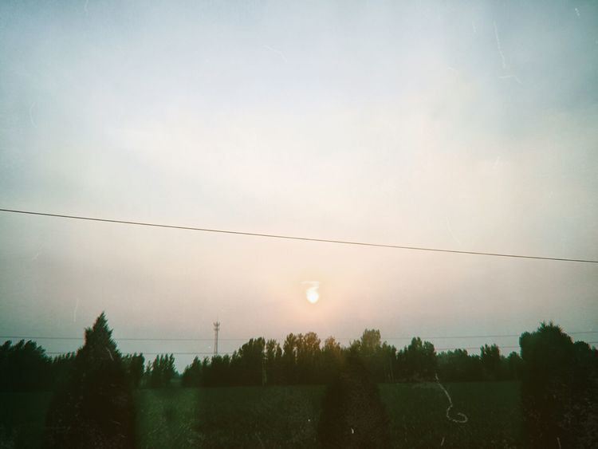
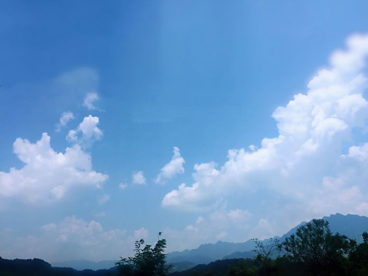
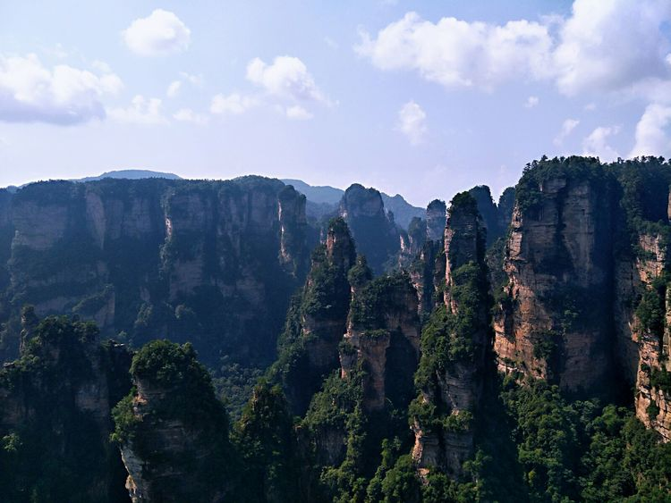

2018年7月18日 星期三 第一天 小雨转晴 清早六点，细雨蒙蒙，如烟如雾。我一行三人拿着行李，撑起雨伞，走到那熟悉不能在熟悉的汽车站，坐上27路，到了火车站。人齐以后，六人便一起上了火车，辗转将近4个小时，到了北京，从2号线倒4号最后坐7号线到了北京西站，上了等了很久的K267次列车，直奔张家界。
2018年7月19日 星期四 第二天 晴 睡了个好觉，早上起来神清气爽。趁着早上的大好时光，阳光明媚，我把《边城》看完了，大概可以算是一气呵成了吧。它给我带来的体会是:生命有许多美好和无常，而且时代在变革，旧社会一定会有所改变。 火车晚点20分，一下车就感到身上“蹭蹭”地冒汗，酷热难耐，幸好在赵导的带领下，快速找到了包车，重回到有凉气的车间。大概坐了一个小时的车，途中听赵导讲了不少当地的风土民情:这里原叫大庸，分为哪几个区，特色菜是三下锅(其实就是东北大杂烩加火锅)，一定要叫当地人阿妹，阿姐，阿婆，阿哥…… 很快我们就来到了玻璃桥，天气出奇的热，我们不是打伞就是带帽子。拍队的人像一条长龙般，路线也是绕来绕去的…… 不过经过一个小时的努力排队，终于到了玻璃桥了!莫名的激动!穿了鞋套便匆匆上桥了。桥上是由99块玻璃和若干石块组成的，开始刚进入会感到害怕，经过不断尝试，一定会克服困难，敢于走玻璃的。没想到这时却有风凉凉的，和着美丽的云彩，有些飘飘然的感觉。 也许是有些乏味了，不久就原路返回，到了下一个景点——黄龙洞。
2018年7月20日 星期五 第三天 晴 今天一早我们就去了武陵源风景区，观看了百龙天梯，袁家界，杨家界和天子山。 杨家界里有天下第一桥，乾坤柱，袁家界我们则看了最最好看的天然长城，天子山有御笔锋和仙女散花。 百龙天梯荣获3项吉尼斯世界纪录，速度非常快有一种饱揽群山的感觉。转眼间群山耸立在以前，一切豁然开朗。
今天的行程就到此结束，还是一个字:爽歪歪(原谅我数学不好)，明天会轻松些，加油！
下一篇